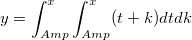

最終更新日:2017/6/23
ツール：フィット関数オーガナイザーで、LabTalkスクリプトかOrigin Cコードを使用してユーザ定義の総和または二重積分フィット関数を作成できます。
関数定義ボックスでForループを組み込んだフィット関数を定義できます。以下関数をサンプルとして考えてみます。
このフィット関数を、関数ボックスで以下のように定義したとします。
y = sum(x, a, n); //nは定数でn=10
次に、ユーザ定義のLabTalk関数sum は、LabTalk関数の定義と初期化ボックスで以下のようにして定義します。
function double sum(double x, double a, int n) { double bb = 0; for(ii =1; ii<=n; ii++) { bb = a * x * x + bb; } return bb; }
積分を実行するNAG関数を呼び出すOrigin Cフィット関数を定義できます。以下関数をサンプルとして考えてみます。

//add the header file for the NAG functions here.
そして、この行の下にNAG関数のヘッダファイルを追加します。
#include <OC_nag.h>
static double NAG_CALL f(int n, double z[], Nag_User *comm) { double tmp_pwr; tmp_pwr = z[0]+z[1]; return tmp_pwr; }
void _nlsfnag_double_integral_fitting( // Fit Parameter(s): double amp, // Independent Variable(s): double x, // Dependent Variable(s): double& y) { // Beginning of editable part int ndim = 2; // 積分次元 int maxpts = 1000*2; // 関数評価の最大数 double a[2], b[2]; int k; static NagError fail; double finval; int minpts; double acc, eps; Nag_User comm; for (k=0; k < 2; ++k) // 積分区間 { a[k] = amp; b[k] = x; } eps = 0.0001; // 精度設定 minpts = 0; d01wcc(ndim, f, a, b, &minpts, maxpts, eps, &finval, &acc, &comm, &fail); y = finval; // End of editable part }
ユーザ定義の積分関数についてのチュートリアルがいくつかあります。必要に応じて関連するトピックで詳細な操作を参照してください。
キーワード: 積分する, 積分, フィット, OriginC, LabTalk, NAG, 総和, 二重積分